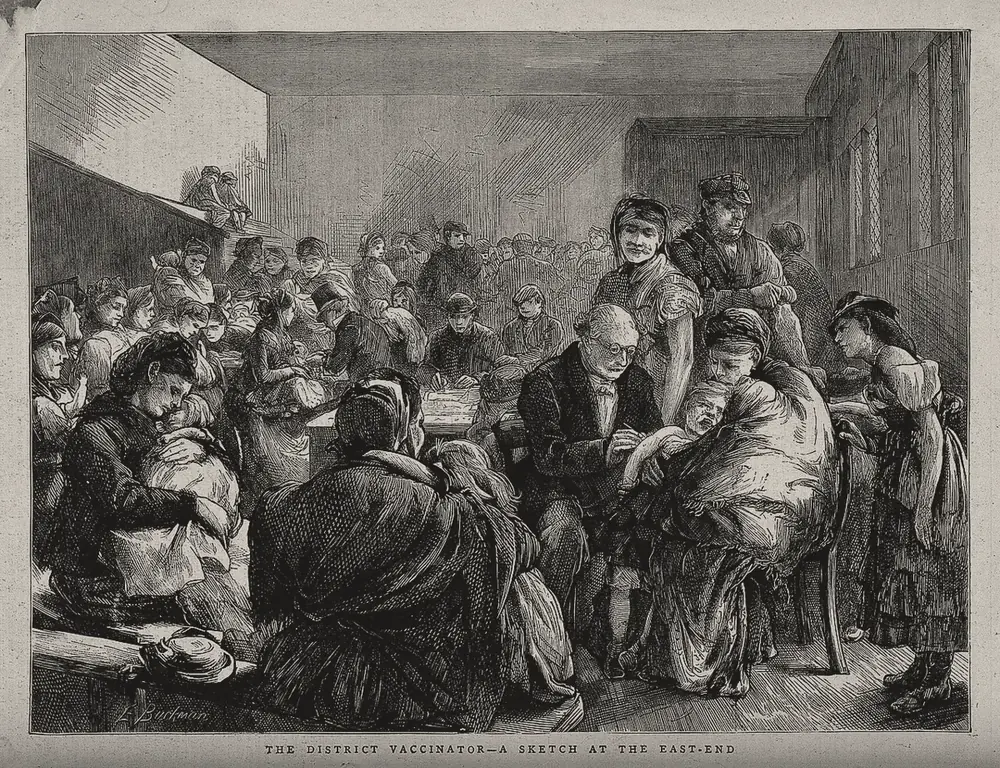

· Edición 5 · 9 min de lectura
El sarampión que regresa, las cuentas que no cuadran y las escuelas sin agua
Revisada el · 1 corrección posteriores a la publicación

Grabado de Edwin Buckman, 1871 · CC BY 4.0, vía Wikimedia Commons
El sarampión regresa donde bajó la vacunación
Ver todo el tema, de principio a fin →
En pocas palabras. El sarampión volvió con fuerza a Estados Unidos y a México. Vuelve donde se vacunan menos niños. Colombia también está por debajo de la meta.
Qué pasó. El 23 de septiembre, los Centros para el Control y la Prevención de Enfermedades (CDC) de Estados Unidos registraron la primera muerte por sarampión de 2026. Pensilvania reporta cuatro. El secretario de Salud, Robert F. Kennedy Jr., dice que solo una fue por el virus. Estados Unidos suma 3.471 casos al 17 de septiembre: más que en todo 2025. México lleva 12.922 casos en 2026, según su Secretaría de Salud.
Fuente: CDC
Ver datos
| casos | |
|---|---|
| 2024 | 285 |
| 2025 | 2.289 |
| 2026 | 3.471 (hasta el 17 de septiembre) |
Cómo llegamos aquí. Para que el sarampión no circule, de cada 100 personas tienen que estar vacunadas 95. La vacuna que lo previene es la triple viral, que protege contra sarampión, rubéola y paperas.
- En Estados Unidos, la meta se perdió. Entre los niños que entran a kínder, la vacunación bajó de 95,2% en 2019-2020 a 92,4% en 2025-2026.
- Colombia tampoco llega. Está en 93,5% para los nacidos desde 2019.
- La vacuna es víctima de su éxito. Cuando la enfermedad deja de verse, dejar de vacunar parece gratis. (Conocimiento general: y el costo lo pagan otros, como los bebés demasiado pequeños para vacunarse).
¿Hay salida? Italia y California pidieron las vacunas para entrar al colegio.
- Italia. Tras un brote de más de 5.000 casos en 2017, pasó de 4 a 10 vacunas obligatorias. La vacunación con triple viral subió de 87,2% en 2016 a 91,6% en 2017.
- California. La ley SB277 quitó las exenciones por creencias personales, es decir, el permiso para matricular a un niño sin vacunas por lo que creen sus padres. En el primer año, los niños que entraban a kínder sin todas sus vacunas bajaron de 7,15% a 4,42%.
- Recordatorios. Un mensaje de texto, una postal o una llamada automática que avisa que toca la vacuna. Según un análisis de 75 estudios, probablemente aumentan 28% la proporción de vacunados.
La receta: el carné de vacunas como requisito de matrícula, con pocas excepciones y vigiladas, más los recordatorios.
Pero ojo. En California, parte del efecto se perdió por las exenciones médicas y por los niños que pasaron a estudiar en casa. Al segundo año, los niños sin todas sus vacunas volvieron a aumentar. E Italia no llegó al 95%.
Ya pasó antes. Las Américas fueron declaradas libres de sarampión en 2016. Perdieron ese estatus en 2025, cuando el virus volvió a circular en Canadá. (Conocimiento general: en 1998, un artículo luego retractado vinculó la triple viral con el autismo, y la vacunación cayó durante años en el Reino Unido.) La confianza se pierde rápido y se recupera despacio.
Cuentas públicas reprobadas, año tras año
En pocas palabras. La Contraloría revisó las cuentas del Gobierno de 2025 y les puso la peor nota. No es la primera vez. Y la nota llega cuando el gobierno revisado ya se fue.
Qué pasó. El 23 de septiembre, la Contraloría, la entidad que vigila cómo se gasta la plata pública, le presentó a la Cámara su revisión de las cuentas de 2025. Funciona como un boletín de notas:
- Cuenta General del Presupuesto y del Tesoro: reprobada. Recibió "opinión no razonable", la peor nota. Quiere decir que esas cuentas, en conjunto, no reflejan la realidad. Hay cifras que no cuadran por 43,85 billones de pesos.
- Balance General de la Nación: pasó raspando. Recibió "opinión con salvedades": las cuentas están bien, salvo en algunos puntos. En cuentas públicas, eso ya es casi un elogio. Lo que no cuadra suma 22,4 billones. Se concentra en la ANI, la agencia que contrata las vías; la DIAN, que cobra los impuestos, y Ecopetrol, la petrolera del Estado.
Cómo llegamos aquí.
- No es la primera vez. Las cuentas del presupuesto de 2023 también recibieron la peor nota, con irregularidades por 60,2 billones de pesos. Cambia la cifra, no la nota.
- La nota llega tarde. Sale nueve meses después de cerrado el año, cuando el gobierno revisado ya se fue. Es como entregar la nota del examen cuando el estudiante ya se graduó.
¿Hay salida? Brasil hace auditorías por sorteo: una lotería que ningún alcalde quiere ganar. La Contraloría General de la Unión escoge municipios, revisa en qué gastaron la plata que les manda el gobierno federal y publica lo que encuentra.
- Los votantes castigan. Publicar los resultados antes de las elecciones bajó cerca de 20% la probabilidad de que reeligieran a los alcaldes implicados.
- Los jueces castigan más. Según un estudio de 2018, haber sido auditado baja la corrupción futura en 8% y sube en 20% la probabilidad de una acción judicial. El juez asusta más que el elector.
- Indonesia. En un experimento con más de 600 proyectos de vías, la probabilidad de una auditoría pasó de 4% a 100%: de 1 en 25 a todos. El dinero que faltaba bajó 8 puntos porcentuales. El dinero aparece cuando alguien va a contarlo.
La receta: que la revisión sea probable de verdad, que el resultado se publique en palabras claras y que haya consecuencias ante los jueces o en la administración.
Pero ojo. Esta evidencia es sobre municipios y obras, no sobre un gobierno nacional. Y en Chile pasó algo curioso. La revisión miraba más los procesos de compra complicados. Entonces las entidades auditadas dejaron las licitaciones, que son concursos abiertos, y pasaron a contratar directo. La forma más segura de pasar la auditoría resultó ser comprar con menos competencia.
Ya pasó antes. (Conocimiento general.) En 2015, el Tribunal de Cuentas de Brasil recomendó rechazar las cuentas de 2014 del gobierno de Dilma Rousseff por las "pedaladas fiscales". Ese argumento sostuvo su destitución en 2016. Las notas del auditor pesan cuando la política las usa. Y entonces sirven más para pelear que para corregir.
Escuelas sin agua: construir resulta más fácil que mantener
En pocas palabras. Cientos de millones de niños estudian en escuelas sin agua potable o sin baños básicos. Construir un baño se ve y se inaugura. Lo difícil es pagar cada año para que siga funcionando.
Qué pasó. El 22 de septiembre, la Organización Mundial de la Salud y UNICEF, el fondo de la ONU para la infancia, publicaron su balance 2015-2025 sobre agua y baños en las escuelas del mundo.
- Las escuelas con agua potable básica pasaron de 67% a 78%: hoy son casi 8 de cada 10.
- Pero 429 millones de niños siguen sin agua potable básica.
- Y 460 millones no tienen saneamiento básico, es decir, baños adecuados.
En Colombia, el ministro de Educación dijo en 2022 que 4 de cada 10 escuelas rurales no tenían agua potable.
Cómo llegamos aquí. Construir un baño es una obra que se ve, con inauguración. Mantenerlo es un gasto de todos los años, y nadie se siente dueño de ese gasto. Nadie corta una cinta para estrenar un jabón.
- Kenia. Un estudio de 2016 en 89 escuelas rurales encontró que se gastaban 1,83 dólares por estudiante al año en agua, baños e higiene. Operarlos y mantenerlos costaría 3,03. Es decir, se gastaban unos 6 de cada 10 dólares necesarios.
Fuente: IJERPH, 2016 (89 escuelas en tres condados)
Ver datos
| dólares por estudiante al año | |
|---|---|
| Gasto actual | 1,83 |
| Costo de mantener | 3,03 |
- India. Una auditoría oficial de 2019 encontró que cerca de 4 de cada 10 baños construidos en escuelas públicas no existían, estaban incompletos o no se usaban.
¿Hay salida? Kenia lo intentó con el programa escolar SWASH+.
- Baños mejores, niñas en clase. En un experimento de 2012 con escuelas escogidas por sorteo, mejorar los baños redujo las faltas de las niñas. Las de los niños, no.
- Plata para el jabón. Otro experimento, de 2013, mostró que las escuelas que recibieron dinero para insumos y reparaciones tuvieron más jabón, agua tratada y letrinas limpias. Con dinero para jabón, hubo jabón.
- El Gobierno se sumó. Según CARE, socia del programa, el Gobierno subió 64% la parte para agua y baños del subsidio por estudiante de las primarias públicas.
La receta: poner en el presupuesto el mantenimiento, no solo la obra. Una suma por estudiante para jabón, cloro, reparaciones y un encargado, dentro de la plata que la escuela ya recibe.
Pero ojo. Un experimento posterior en 60 escuelas de Kenia logró letrinas más limpias y más lavado de manos. Pero las faltas no cambiaron: el baño limpio no llenó el salón. Y el estudio de costos ya tiene diez años.
Ya pasó antes. (Conocimiento general.) Con las bombas manuales de agua en la África rural pasa lo mismo. Donantes y gobiernos pagan la instalación. El mantenimiento queda en manos de comunidades sin recursos, y una parte de las bombas deja de funcionar pronto. La obra se inaugura una vez, con foto; el servicio se paga todos los años, sin ella.
Asombro
La Antártida ganó hielo por un calor lejano. Entre 2021 y 2023, la Antártida oriental ganó unos 695.000 millones de toneladas de hielo. Un estudio en Nature lo explica por unas aguas cálidas entre el Pacífico y el Índico. Esas aguas mandaron humedad hacia el polo, y allá cayó como nieve. Fue una buena racha, no una recuperación: la tendencia de las últimas dos décadas es perder unos 140.500 millones de toneladas al año.
Por qué el metano dejó de crecer entre 2000 y 2006. Otro estudio en Nature lo explica por un aumento de cerca de 1,4% del radical hidroxilo, una molécula del aire que descompone el metano. Ese aumento vino de más contaminación de barcos y de países en desarrollo. Un raro favor del humo al clima, que nadie propone repetir.
Patrón. En los dos casos, la causa estaba lejos del efecto.
La paradoja del día
En India, cerca de 4 de cada 10 baños que figuraban como construidos en escuelas públicas no existían, estaban incompletos o no se usaban. En Colombia, las cuentas de 2025 traen 43,85 billones de pesos que no cuadran. Hay baños que solo existen en las cuentas, y cuentas que no cuadran con lo que existe.
Para conversar
La pregunta. Una vacuna que evita un caso, una auditoría que evita un desvío de plata y un baño escolar que sigue limpio tienen algo en común: cuando funcionan, no pasa nada. ¿Cómo se defiende en el presupuesto algo cuyo éxito es que no se note, y al que nadie le puede poner una placa?
Qué puede hacer usted. Revise el carné de vacunación de los niños de la familia. Confirme que tengan las dos dosis de triple viral. En Colombia es gratuita.
¿Le interesa ver las fuentes?
43 fuentes: 17 académicas, 9 oficiales, 1 de datos, 2 de organizaciones, 14 de prensa.
- Prensa U.S. News / Reuters. Los CDC confirman la primera muerte por sarampión de 2026
- Prensa NPR. Las muertes por sarampión en Pensilvania y la disputa con Kennedy
- Oficial CDC. Casos y brotes de sarampión
- Datos CDC SchoolVaxView. Cobertura y exenciones de vacunación en kínder
- Prensa CNBC. Baja la cobertura de vacunación en kínder
- Oficial Secretaría de Salud de México. Informe diario del brote de sarampión en México, 2026
- Prensa Excélsior. México, segundo en casos de sarampión en las Américas
- Oficial OPS. Estimaciones OMS/UNICEF: cae la cobertura contra el sarampión en las Américas
- Oficial OPS. Colombia fortalece su preparación frente al sarampión
- Prensa El Colombiano. Alerta por sarampión en Colombia
- Organización ASTHO. Los brotes de sarampión y el estatus de eliminación
- Académica Human Vaccines & Immunotherapeutics. Efecto de la ley de vacunación obligatoria en Italia, 2013-2019
- Académica PMC. La ley de vacunación obligatoria en Italia, dos años después
- Académica Pediatrics. Eliminación de exenciones no médicas en California
- Académica Vaccines (MDPI). Revisión sistemática de programas obligatorios y de incentivos en Europa
- Académica Cochrane Library. Recordatorios para mejorar la vacunación
- Académica PMC. Un mandato contra el sarampión y la vacunación en Alemania
- Prensa El Tiempo. Inconsistencias por más de $66 billones en las cuentas fiscales
- Prensa Infobae. Irregularidades en las cuentas fiscales, según la Contraloría
- Prensa Colombia.com. Inconsistencias por más de $43 billones
- Prensa El Colombiano. Irregularidades por $60,2 billones en el presupuesto de 2023
- Oficial Congreso de la República del Perú. El Pleno no aprueba la Cuenta General de la República 2024
- Prensa Gestión. Congreso no aprueba la Cuenta General 2024
- Académica British Journal of Political Science. Política interna, transparencia y contabilidad creativa en Europa
- Académica Quarterly Journal of Economics. Auditorías públicas y reelección en Brasil
- Académica Journal of Political Economy. ¿Reducen la corrupción las auditorías?
- Académica Journal of Political Economy. Experimento de auditorías en Indonesia
- Académica NBER. ¿Pueden las auditorías ser contraproducentes? Compras públicas en Chile
- Oficial UN News. Millones de niños vuelven a escuelas sin agua ni baño
- Oficial OMS / UNICEF (JMP). Agua, saneamiento e higiene en las escuelas, 2015-2025
- Prensa Global Education News. Niños sin saneamiento escolar en India, según la ONU
- Prensa Infobae. 40% de escuelas rurales sin agua potable, según el ministro
- Académica IJERPH. Costos del ciclo de vida del agua y el saneamiento en escuelas de Kenia
- Oficial Contralor y Auditor General de India. Auditoría de baños construidos en escuelas
- Prensa Down To Earth. Irregularidades en los baños de escuelas públicas
- Académica Tropical Medicine & International Health. Ensayo de agua, saneamiento e higiene y ausentismo en Kenia
- Académica Journal of Water and Health. Ensayo para mejorar el servicio en escuelas de Kenia
- Académica Tropical Medicine & International Health. Limpieza de letrinas y ausentismo en Kenia
- Organización CARE. SWASH+: agua y saneamiento escolar en Kenia
- Académica Nature. El calentamiento del Pacífico tropical frena la pérdida de hielo antártico
- Prensa ScienceDaily. La Antártida ganó 695.000 millones de toneladas de hielo
- Académica Nature. La meseta del metano y los óxidos de nitrógeno
- Oficial NOAA. La química atmosférica y el aumento del metano
Glosario
- Triple viral: vacuna contra sarampión, rubéola y paperas. Se aplican dos dosis en la infancia.
- Umbral del 95%: proporción de la población vacunada que se necesita para que el sarampión no circule.
- Exención no médica: permiso para matricular a un niño sin vacunas por creencias personales o religiosas.
- Recordatorio y rescate: avisar cuando toca una dosis (recordatorio) o cuando ya se atrasó (rescate).
- Opinión no razonable: calificación de un auditor cuando las cuentas, en conjunto, no reflejan la realidad.
- Opinión con salvedades: las cuentas son razonables salvo en puntos concretos que el auditor señala.
- Radical hidroxilo: molécula muy reactiva que limpia la atmósfera de metano y otros gases.
Nota metodológica
Hicimos unas 55 búsquedas en español e inglés: barrido de noticias del 23 al 25 de septiembre (mundo, América Latina y Colombia) y búsquedas dirigidas de revisiones sistemáticas, ensayos y evaluaciones (PubMed, Cochrane, NBER, revistas de economía y salud pública). No pudimos abrir los documentos completos (por ejemplo, los de la Secretaría del Senado y el NBER), así que trabajamos con resúmenes y resultados de búsqueda; no atribuimos a los estudios más de lo que dicen sus resúmenes. Priorizamos nudos con novedad de las últimas 48 horas, evidencia de diseño fuerte y geografía variada, sin repetir temas de las ediciones 1 a 4.
Quedó sin verificar o con límites:
- El informe de la Contraloría no apareció en su sitio en las búsquedas: las cifras vienen de El Tiempo, Infobae y Colombia.com, que coinciden. El total de "más de 66 billones" de El Tiempo parece sumar los 43,85 y los 22,4 billones de dos informes distintos; por eso no se usa. No se encontró la cifra de 2024, y las de 2023 y 2025 no son del todo comparables, así que el nudo no lleva gráfico.
- El 40% de escuelas rurales sin agua en Colombia es una declaración del ministro de Educación de 2022, no un dato estadístico publicado.
- Las cifras de cobertura de Italia (87,2% y 91,6%) vienen de resúmenes de evaluaciones italianas; no pudimos abrir las tablas.
- El 64% de aumento presupuestal en Kenia es una cifra de CARE, socia del programa.
- Marcado como conocimiento general: el efecto del artículo de 1998 en el Reino Unido, el caso de Dilma Rousseff y el patrón de las bombas manuales en África.
El grabado es de Edwin Buckman (1871) y muestra una jornada de vacunación de niños en Londres; es de otra época y lo usamos para evocar el tema.
Puntaje de impacto (aplicado después de publicar, como primer ejemplo de calibración). Esta edición se eligió antes de que existiera el criterio de impacto; este es el puntaje retrospectivo de sus temas (1 a 3 en alcance, gravedad, duración, cercanía y decisión en curso; gravedad y cercanía valen doble; máximo 21):
| Tema | Alcance | Gravedad | Duración | Cercanía | Decisión | Total |
|---|---|---|---|---|---|---|
| Cuentas públicas reprobadas | 3 | 2 | 2 | 3 | 2 | 17 |
| Sarampión y vacunación | 2 | 3 | 2 | 2 | 1 | 15 |
| Escuelas sin agua | 3 | 2 | 2 | 2 | 1 | 14 |
Con el criterio nuevo, las cuentas públicas habrían ido primero, y un tema colombiano de mayor alcance probablemente habría desplazado a uno de los otros dos.
Correcciones
Datos corregidos después de publicar; cada corrección lleva su fecha.
Corrección ·
Reescribimos la edición en un lenguaje más sencillo, con frases cortas y ejemplos cotidianos. Los datos y las fuentes son los mismos.